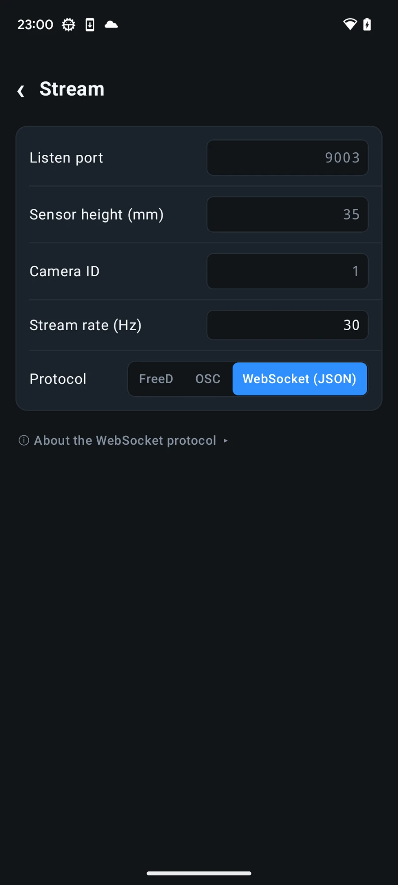
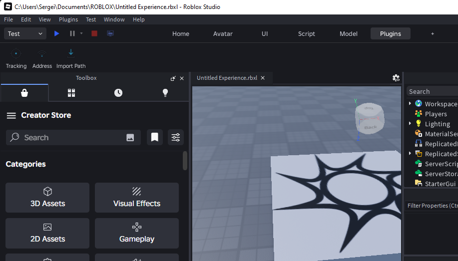
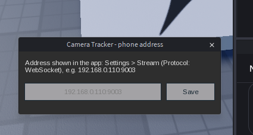
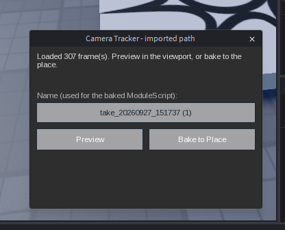

Choose live tracking or a baked path
Live tracking drives the edit viewport or local Play camera while Roblox Studio is open. It is best for previs, blocking, and recording a move.
Bake to Place imports a recorded take as keyframes. The resulting camera path ships with the place and no longer needs the phone, plugin, or network connection.
Roblox permits the required WebSocket client in Studio, not in a published running experience. Use a baked path for camera animation that must work after publishing.
What you need
- 6DoF Camera Tracker and Roblox Studio on the same local network.
- The Camera Tracker Studio plugin installed locally or from its available distribution.
- The phone's local IPv4 address, visible in Android network settings.
- For baked paths, a recorded take and Pro access to Roblox JSON export.
Configure live tracking in the app
- Open Settings → Stream.
- Set Protocol to WebSocket (JSON).
- Keep the listen port at
9003, or note the custom port you choose. - Use the Default axis-mapping preset unless the Studio scene requires a deliberate remap.
- Press Start stream. The phone hosts the server; Roblox Studio connects to it.

Connect the Studio plugin
- Install
CameraWebSocketPlugin.luain the Roblox Studio Plugins folder, or install the distributed plugin version. - Restart Studio and open Plugins → Camera Tracker.
- Select Address and enter the phone IP, optionally followed by the port. For example:
192.168.0.110:9003. - Select Tracking. The plugin connects to the phone and takes control of the Studio viewport camera.
- Press Zero pose in the app to establish the tracker's origin at the intended camera start.


Use tracking in Play mode
Studio hides plugin toolbars while a game is running. Set the address and enable tracking in edit mode first, then enter Play. Press F8 to toggle tracking from the Play client.
When tracking starts in Play, the phone's origin is anchored at the local character's root. Pressing Zero in the app places the virtual camera at that anchor while preserving the phone's live movement and orientation.
When tracking stops or the connection drops, the plugin restores the previous camera mode and field of view. Restart Studio if an interrupted session ever leaves the viewport camera locked.
Bake a recorded take into the place
- Record a take in 6DoF Camera Tracker.
- Open the take's menu and choose Export Roblox Json.
- Transfer the JSON file to the computer.
- In Studio, open Plugins → Camera Tracker → Import Path and select the exported file.
- Review the created path and playback script, then save the place.

Troubleshooting
| Symptom | Check |
|---|---|
| Connection error or repeated retry | Confirm the phone is streaming, the IP and port are correct, and both devices use the same network. |
| Too many WebStream clients | Wait for the plugin to retry; restart Studio if stale clients do not clear. |
| No toolbar during Play | This is expected. Use F8 in the Play client. |
| Camera is stuck at world zero | Remove older camera-control scripts or RemoteEvents that may still be writing the camera. |
| FOV does not change | Calibrate zoom in the app so the WebSocket payload includes a physical field of view. |
| No depth of field | Calibrate both focus and iris. |